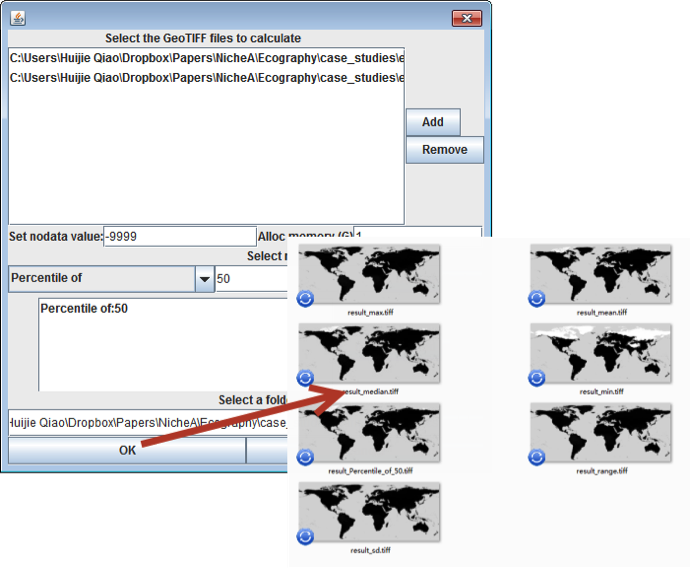

Variables statistics
This function is used to generate new environment layers from multiple original layers with a given statistic method (Max, min, mean, x% percentile value, and others. See Fig. 1). The values of new layers are the statistic results calculated from the selected original layers.
Figure 1. Calculate the max, min, mean, 50% percentile, median and standard deviation values
based on BIO1 and BIO12 environmental layers, and save them to different layers individually.
